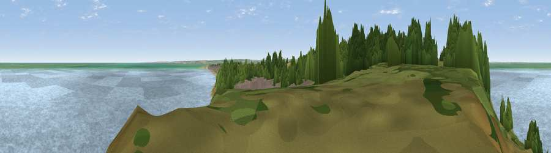

Viewpoint near Warden
#18682 in England · top 21% of its area beats it · near WardenThe view, rendered

A 360° render of this exact spot computed from the terrain model, tree cover and land cover — summer colours, afternoon light, calibrated against photographs of famous viewpoints. Real trees, hedges and buildings will differ in detail.
The panorama
Grey silhouette: terrain skyline in each direction (720 bearings, Earth curvature and refraction included). Dashed green: skyline with trees (+15 m) and buildings (+8 m) as obstacles. Blue strip: how far the ground is visible on each bearing.
Where the view opens
Wedge length = distance to the farthest visible ground on that bearing (vegetation-aware). Rings at 10, 25 and 50 km.
What fills the view
83% water · 9% woodland · 5% grassland · 2% cropland · 1% bare ground ·
Angular shares of the visible panorama (visual magnitude), not map area. Landscape diversity 0.30 (0–1 Shannon).
Key numbers
More beautiful places nearby
The staircase of upgrades: each row has a higher view potential than everything closer. Driving times are estimates from straight-line distance, calibrated against real road routing — check an actual route before setting out.
| Place | Direction | Drive | Score |
|---|---|---|---|
| Viewpoint near Warden | WNW · 0 km | ~1 min | 58.2 |
| Viewpoint near Minster | W · 5 km | ~11 min | 58.8 |
| Viewpoint near Halfway | W · 9 km | ~18 min | 60.2 |
| Viewpoint near Yorkletts | SE · 12 km | ~22 min | 60.9 |
| The Mount (Popsy's View) | S · 18 km | ~31 min | 61.7 |
| Viewpoint near Charing | SSW · 23 km | ~38 min | 68.6 |
| Viewpoint near Westwell | S · 24 km | ~40 min | 72.2 |
| Tolsford Hill | SSE · 37 km | ~55 min | 77.9 |
51.41489, 0.90172 · source: screening · position refined by local search. Computed location — check access rights before visiting.